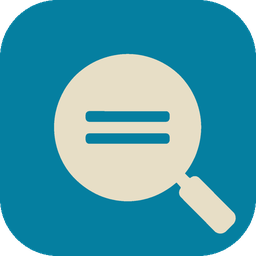
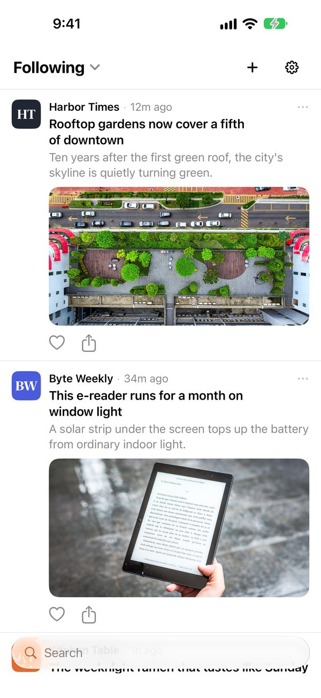
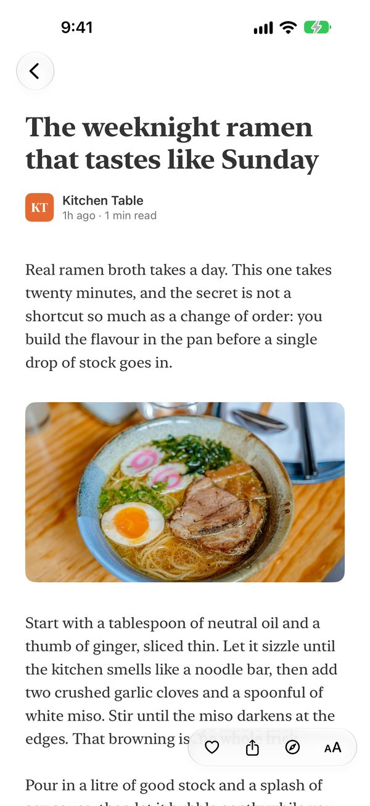

Lente
An RSS reader for iPhone and iPad
Not on the App Store yet.
Lente shows posts from the websites you follow, newest first. It doesn't rank them, mix in suggestions or show ads. A caught-up indicator marks where new posts end; older articles stay available.


What it does
- Following sites. Type a site's address and Lente finds its feed. You can also subscribe from Safari's share menu, or bring an OPML file from another reader.
- Lists. Put sites into lists, like Tech or Cooking, and swipe left and right to switch between them. Each list remembers where you stopped. On iPad the lists sit in the sidebar.
- Feed reading. Read the text each publisher includes in its feed. For the rest, tap Read on website; the built-in browser opens Reader when the site supports it.
- Reading. Light, sepia or dark, with your choice of typeface and text size.
- Saving. Tap the heart to keep a post. "Save to Lente" in the share menu keeps a web page's title and link.
- Sync. Your sites, lists and saved posts sync through your own iCloud. There's no Lente account to sign up for.
- Widget. The latest headlines on your home screen, refreshed in the background.
Privacy
Lente has no ads, tracking or third-party analytics. It downloads posts directly from the sites you follow, and uses your private iCloud account for sync. The privacy policy has the details.